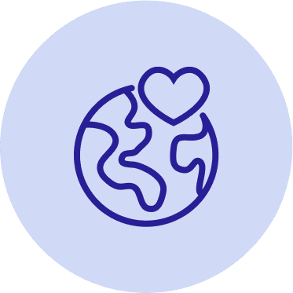
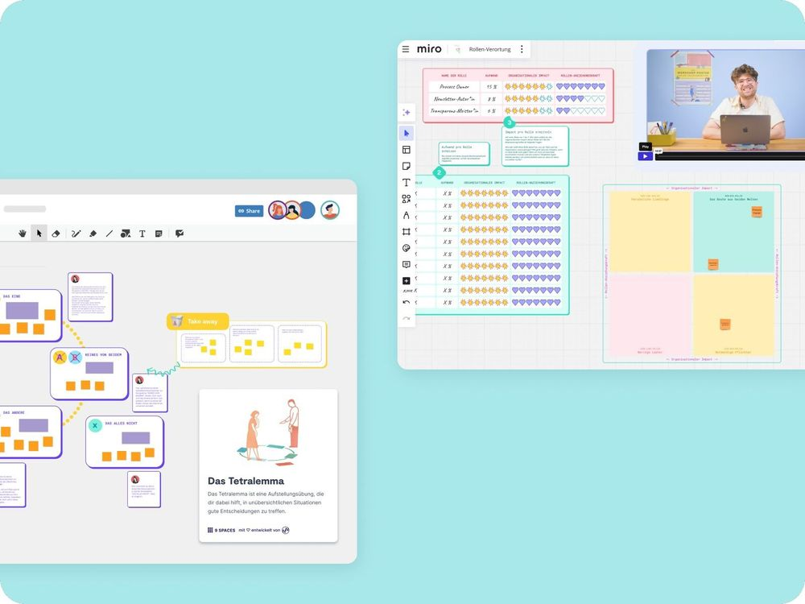

Solo
1 Zugang
299€
pro Jahr
zzgl. MwSt
Jährliche Abrechnung, jederzeit kündbar
Mit über 150 Tools und Workshops unterstützt 9 Spaces gemeinnützige Organisationen dabei, Wirkung sichtbar zu machen, Teams zu stärken und die Zukunft nachhaltig zu gestalten.

Hier lernt ihr, wie ihr als Non-Profit-Organisation mit 9 Spaces euren Impact erhöht.
Non-Profits und NGOs stehen vor großen Herausforderungen – von knappen Ressourcen bis zur effektiven Zusammenarbeit. 9 Spaces unterstützt euch bei eurer Arbeit mit:

💰 Begrenzte finanzielle Mittel: Ressourcen effizient einzusetzen, ist entscheidend, um Projekte erfolgreich umzusetzen und Wirkung zu erzielen.
📉 Der Einsatz digitaler Tools ist noch ausbaufähig, dabei könnten sie Effizienz und Zusammenarbeit deutlich stärken.
🤝 21,1 % der Deutschen engagieren sich ehrenamtlich, doch Freiwillige langfristig zu binden, bleibt eine Herausforderung.
⚙️ Verwaltungsaufwand als Hürde: Ineffiziente Prozesse rauben wertvolle Zeit für die eigentliche Projektarbeit.
Quellen: BMFSFJ, Statista, LinkedIn, Technologiestiftung Berlin
Unser KI-Facilitator findet einen Workshop für dich, der genau zu deinen Herausforderungen passt.

zzgl. MwSt
Jährliche Abrechnung, jederzeit kündbar
Zugang für mehrere Mitarbeitende in einem maßgeschneiderten Plan
Unser Team unterstützt euch gerne dabei, die perfekte Lösung für euch zu finden.